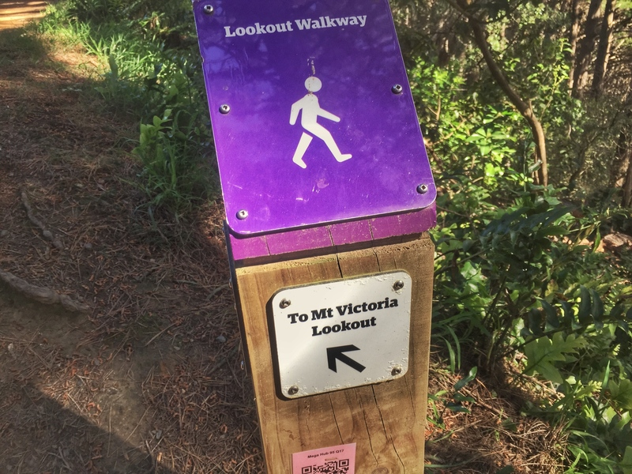

|
Mount Victoria WellingtonExplore Wellington |
|
Mount Victoria WellingtonExplore Wellington |
Mt Vic is shared with walkers but there is plenty of room for everyone.Land managed by Wellington City Council.
Most is part of the town belt reserve.
There are several routes you can take up Mount Victoria. They will lead you through bush or a pine forest before reaching the peak.
